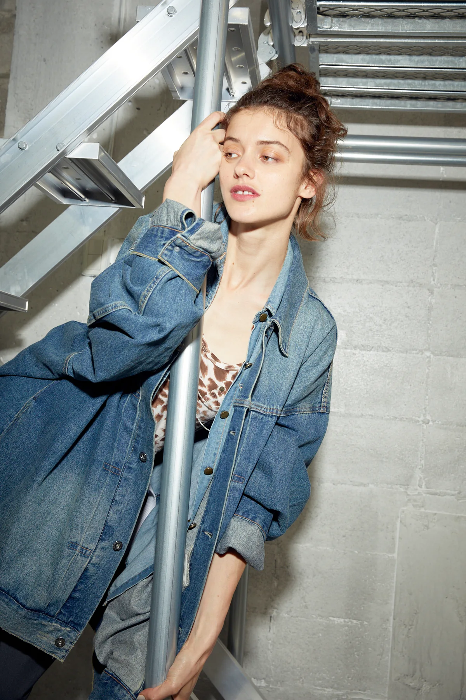

ORIGINAL DENIM LABEL / DAYS CO., LTD.
SCAR
PETTA.
BREAK THE RULES.
WEAR YOUR OWN WAY.
常識にとらわれない、
現代のジェンダーレスデニム。
OFFICIAL ONLINE STORE↗現代のジェンダーレスデニム。

GENDERLESS DENIM / TOKYO
DENIM AS AN ATTITUDE.SCROLL TO DISCOVER ↓
THE PHILOSOPHY / 01
WHAT IS SCARPETTA?「アリ」か「ナシ」か。
「アリ」か「ナシ」か。
その境界を、越えていく。
SCARPETTA（スカルペッタ）は、パンでお皿に残ったソースをぬぐうイタリア語の表現に由来します。フォーマルな席では避けられる一方、おいしさの証として愛されることもある行為。
ひとつのものに、ふたつの見方がある。その二面性を楽しみながら、既成概念に縛られないジェンダーレスなデニムを提案します。

SCARPETTA / EDITORIAL
DENIM, REIMAGINED.
EDITORIAL ARCHIVE / 02
The Looks.
SCARPETTAの世界観を、
ビジュアルで紹介します。
WHAT'S NEXT / 03
NEW PROJECT,
IN PROGRESS.
SCARPETTAでは、新たなプロジェクトを進行中。
これからの展開は公式Instagramでお知らせしていきます。
SHOP & INQUIRIES